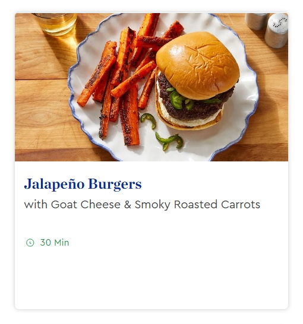

Blue Apron Microinteraction Design
For my final, I created a microinteraction design for Blue Apron's recipes. Currently, blueapron.com does not have an existing microinteraction for its recipes. I believe creating a microinteraction for a cookbook website like Blue Apron will make users feel more engaged to explore the contents of the website. In my design, I created a simple card with the image of the recipes which reveals the recipe's name when the user hovers over the image. While the image is still hovered, the user can click the button in the top left corner which will reveal a side menu, giving the user a preview of the recipe's preparation information.
Context & Challenge
I wanted to create a microinteraction for Blue Apron's recipes to make it more interactive when the user is exploring the website. Currently, Blue Apron's recipes are static cards that give little insight what the recipe is. Although the current recipe look is short and simple, it doesn't give the user more recipe information unless the recipe is clicked. At a glance, the user can see the recipe name, picture, and how long it takes on average to cook the recipe, but it doesn't reveal the serving amount or calories. I think it would be important for the user to see these extra details at a first glance for users who are watching their specific intake of food or finding a recipe to make for a large crowd. Adding these extra details would save the user time from clicking on each recipe to reveal this information.
Process & Insight
I think when a user is looking for a recipe, the first thing the user is going to look for is the image to see if the recipe looks appealing to them which is why In the first step of this process, I wanted to show an image of the recipe before displaying the name and it's contents. Next I had to think of a way on how I was going to present the the recipe's name, time, servings, calories, and overview of ingredients when the user hovers the image. At first I thought about showing all of the contents on hover, but I thought that would be too much information to reveal on a small card, which is why I broke it down. I came up with the idea to reveal the recipe's name on hover and add a corner button to reveal a side menu that would display the recipe's name, time, servings, calories, and overview of ingredients. At the bottom of the side menu, I added a "More Details" button to ensure if the user is interested in the recipe, they can click the button and it will navigate the user to it's designated recipe page.